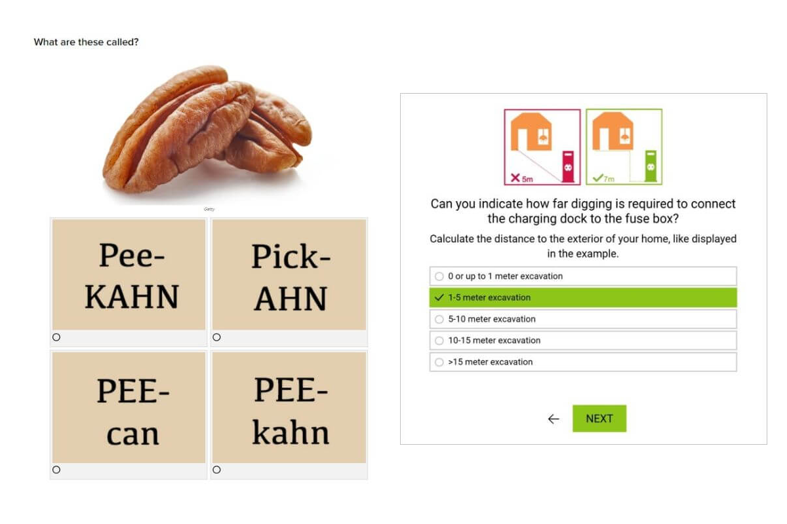

24 tháng 05,2021
Frontend ReactJS Javascript CSS HTML
Cách nhanh nhất để lên trình Front-end là tự triển những project thật. Bạn có thể xem tutorials, hay tham gia rất nhiều khóa học, nhưng nếu không tự ứng dụng và thực hành thì sẽ rất khó để bạn thực sự tiếp thu những kỹ năng cần thiết cho những projects thực tế.
Những project từ client thì sẽ không có hướng dẫn từ A đến Z, nếu có thì họ cũng chẳng cần bạn làm gì. Với project được giao, bạn phải tự thân vận động từ solution, thực hiện từng bước, thậm chí hack quá trình để về đích.
Vì vậy cách tốt nhất để luyện skill là bắt tay tự làm những project front-end và tự rút ra bài học kinh nghiệm cá nhân luôn một thể. Chưa cần khách hàng vào thời điểm này khi tự bạn có thể build project cho riêng mình.
Khoan hãy chọn những project quá nâng cao so với trình hiện tại, nhất là nếu bạn dễ nản khi gặp khó khăn. Nhưng cũng đừng quên mục tiêu đặt ra là để master front-end, cho nên hãy chọn một project cao hơn so với skill level hiện tại, mà vẫn khả thi.
Ví dụ, bạn vừa hoàn thành HTML và CSS, thì đã đến lúc tìm hiểu thêm JavaScript.
Xử lý problem cá nhân hay bài toán mà bạn quan tâm
Bạn sẽ hào hứng và “dính” với project hơn nếu có problem liên quan đến cuộc sống xung quanh hay nó có thể đáp ứng mong muốn nào đó của riêng bạn.
Có thể nhiều lúc bạn mất kiểm soát về thời gian khi lướt Facebook quá nhiều, hoặc bạn đang muốn có một cái web mà có thể tự tạo Youtube thumbnails. Nói chung là bạn hãy cân nhắc một vấn đề cá nhân mà công nghệ có thể nhúng tay vào và bắt đầu từ đó, những gợi ý trong bài này chỉ là khởi điểm cơ bản thôi, nếu bạn tự thêm những tính năng độc lạ thì càng đỉnh.
Luyện skill:HTML, CSS, JavaScript, and/or Bootstrap.
Một cách hay để tìm hiểu một trang web được dựng như thế nào và một số cách bài trí cơ bản như cấu trúc trang, màu sắc, font chữ, media, table, vân vân. Đào càng chi tiết có thể để dựng bản y hệt từ phiên bản gốc. Có thể chọn website nào tùy thích, hạn chế nhìn source code để có cái nhìn tổng thể nhất.
Clone Google là một trong những bài tập của Thinkful – một tổ chức giáo dục cung cấp các khóa học technology bao gồm web development bootcamp, giao cho học viên của họ.
Bạn cũng có thể bắt chước bài tập này để clone trang của app Karma WiFi, của Kyle Koshki, một trong những giảng viên tại Thinkful, và sử dụng HTML và CSS.
Ưu điểm khi clone một website là có thể tùy ý chọn độ phức tạp của trang web đó. Mới bắt đầu thì có thể chọn web nào đơn giản mà chỉ cần mỗi HTML và CSS. Nâng cấp hơn thì có thể thêm JavaScript và React.
Luyện skill:JavaScript
JavaScript là ngôn ngữ lập trình cho phép tạo trang web tương tác. Sử dụng ngôn ngữ này bạn có thể tạo những element responsive như là menu, video, hiệu ứng animation, interactive maps và thậm chí game in-browser. Vậy tại sao đầu tiên phải build quiz?
Không chỉ vì game thú vị, quiz đang dần trở nên phổ biến như các công cụ content marketing. Bạn đã bắt gặp những thứ này chưa?
Quizz là công cụ marketing khá hiệu quả vì chúng có tính năng tương tác. Theo một khảo sát của Content Marketing Institute, 81% marketer cho rằng interactive content – bất kỳ nội dung nào yêu cầu người dùng phải tham gia – thu hút chú ý hiệu quả hơn hẳn content tĩnh. Vì lý do này, quiz được dùng cho các mục đích marketing khác nhau. Những câu quiz đơn giản, như hình bên trái, được dùng để đẩy traffic của web.
Tại sao bạn cần biết những chuyên này? Bởi vì công việc của bạn không phải chỉ tạo nên sản phẩm đẹp, mà còn phải tạo những tính năng thân thiện với user – user-friendly và khiến web của khách hàng hoạt động hiệu quả, đạt mục đích sale và marketing của họ nữa.
Để tạo quiz thì bạn có thể coi qua tutorial của WebDevTrick và SitePoint. JS quiz có thể hiện thế này:
Luyện skill:JavaScript
Barcode và QR đang dần thay đổi cách thức mua sắm của người dùng. Với smartphone, khách hàng có thể scan sản phẩm và có được hàng tá thông tin về sản phẩm như giá cả hay nơi bán. Không cần phải gõ những dòng code dài ngoằng lên web như activation code hay số hiệu model, khiến cho trải nghiệm mua sắm đơn giản và dễ dàng hơn.
Trái với những gì mọi người nghĩ, bạn không cần hẳn một cái app native để scan QR codes. Website chạy trên thiết bị thông minh có camera có thể làm được chuyện đó. Trang này sẽ hướng dẫn bạn từng bước một tạo máy quét QR code của riêng mình.
Bạn sẽ dùng HTML và JavaScript, nhưng phần quan trọng nhất là sử dụng thư viện JS mà có thể biên dịch QR code. Không cần phải tạo một thư viện từ đầu vì đã có sẵn khá nhiều.
Luyện skill:Angular8
Angular là một trong ba frameworks front-end phổ biến nhất bên cạnh React và Vue.js. Nó thường được dùng để build app form-based (app mà phải sign up để tạo account) nhưng cũng có thể dùng để build game và thậm chí những app có yếu tố virtual reality (thực tế ảo).
Trên Medium có một tutorial step-by-step rất chi tiết hướng dẫn beginner cách tạp một cái app thời tiết khá đẹp mắt với Angular 8 (phiên bản mới nhất của Angular). Cái weather app đó như thế này:

Ứng dụng này có thiết kế tinh gọn và tối giản với hình minh họa bắt mắt và giao diện đơn giản. Nó còn có cả tính năng light/dark mode. Với project này bạn sẽ cảm giác như build một app responsive, hữu dụng từ đầu đến cuối. Có thể học thêm vài thứ như install Node.js và Angular CLI để test code với LightHouse.
Mặc dù tác giả của tutorial này đã thiết kế giao diện của riêng ổng, nhưng bạn vẫn có thể sáng tạo thêm styling của riêng mình. Chọn thêm animation CSS, dùng thêm logo, icon và những materials khác. Xem thêm tutorial tại đây.
Tutorial này thích hợp với beginner nhưng vẫn cần một chút hiểu biết về Angular, và bạn có thể xem qua Angular.io.
Với một số project, có thể bạn sẽ làm chung với web designer để quyết định phần ngoại hình của website. Mặc dù design và dev là hai khái niệm khác nhau, tuy nhiên nếu nắm bắt được web design không chỉ là bổ sung skill mà còn trang bị cho bạn khá đầy đủ nếu sau này trở thành freelancer, tự bạn có thể triển từ design tới deploy. Design và code một web portfolio của riêng mình cũng là cách tự do thể hiện đồng thời khía cạnh nghệ thuật và kỹ thuật.
Bước đầu hãy nghĩ về thông điệp và branding. Core service – service cốt lõi của bạn là gì, bạn muốn làm cho ai, tại sao họ nên chọn bạn? (Đọc thêm tại đây)
Thứ hai là tạo bản mock design để chi tiết hóa layout, màu sắc và chữ viết.
Về theme của web thì nên là tối giản hay sôi nổi, màu đơn sắc hay đậm màu? Sau đó thì thêm một số page cần thiết, như là contact page, vài bài blog, page About me, và page terms and condition (Điều khoản và Điều kiện).
Thứ ba, code đi! Dùng CSS modern để layout, thêm vài animations, chèn hình chất lượng cao. Đừng giới hạn bản thân vì bạn có thể thêm cái gì cũng được, đó là portfolio của bạn mà!
Cách tốt nhất để thực hành front-end development là build app thực tế, tuy nhiên cũng cần một số nơi để tìm tips, tutorials và support khi bí hay cần thêm ý kiến đóng góp.
Đây là một số bookmark phù hợp cho bạn:
Và đó là 5 dự án front-end cho bạn thử sức. Nhắc lần nữa là đây chỉ là điểm khởi đầu thôi. Bạn có thể nâng cấp lên để customize theo ý mình. Đây mới chỉ là thực hành thôi, bạn cần phải tự tay build cái gì đó để nâng trình bản thân.
Happy coding!
Tham khảo ngay khóa học Web Frontend - tại đây.